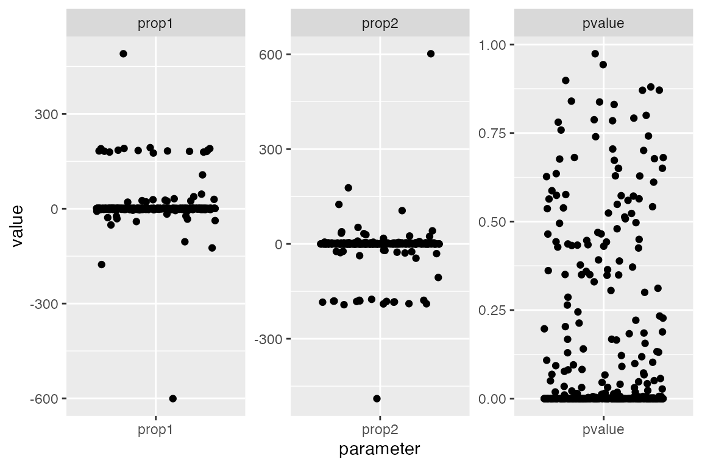
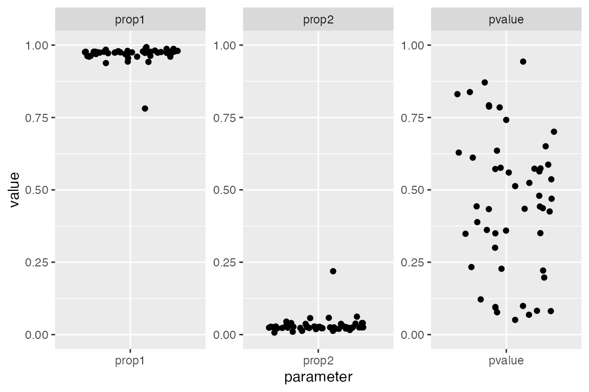

vignettes/qpAdm.Rmd
qpAdm.RmdNote: The functionality described in this vignette is still quite experimental. Please keep this in mind when running qpAdm analyses and be extra careful when drawing conclusions. Feedback, criticisms and suggestions on this functionality are more then welcome!
qpAdm model fitting is a complex topic. To navigate it successfuly requires solid knowledge of the \(f\)-statistics theory first introduced by Nick Patterson and colleagues in 2012. As part of our tutorial, we have looked at a very basic overview of the qpAdm-related functionality implemented in admixr. We also talked about the most important resources for learning more about this powerful method pioneered by Iosif Lazaridis in 2015.
Recently, Harney et al. published an exciting new preprint called “Assessing the Performance of qpAdm: A Statistical Tool for Studying Population Admixture”. Before we go any further, I encourage everyone to read it and the superb tutorial/guide available as its supplementary pdf on bioRxiv. There really isn’t a better source of information on how to run and interpret qpAdm analyses.
Please, only attempt to run qpAdm if you have familiarized yoursef with all of the above-mentioned resources. I have had many people ask questions via email (not only about qpAdm but also other topics) to which the only sensible answer was - “you have to read the papers and understand the statistics first.” I know it’s frustrating but there really are no shortcuts here.
If you have ever worked with qpAdm, you are well aware of the intricacies of finding the most suitable set of models that can explain the data. Among other things, we have to make a decision about the number of admixture sources and which populations are the most appropriate surrogates for those source populations (because only rarely we have sampled them directly). Furthermore, we need to carefully choose a number of so called ‘outgroup’ populations (also called ‘references’ or ‘right’ populations, depending on whom you talk to).
The preprint by Harney et al. described an interesting idea to find a set of the most appropriate models (i.e. combinations of source and outgroup populations) which has been sucessfully used in the past. They call the method a “rotating population” strategy.
This approach starts by defining a set of “candidate” populations from which we iteratively sample a defined number of “sources” of ancestry for our “target” population of interest (most commonly two or three sources). After removing the sources from the candidate list, we then define all the remaining populations as “outgroups”. Finally, we iteratively fit qpAdm models for each combination of target, sources and outgroups, extracting \(p\)-values and other statistics of interest. After finishing the exhaustive fitting of source-outgroup combinations, we examine all explored models, selecting those that seem most appropriate.
In admixr, I have implemented a function
qpAdm_rotation() which does exactly what is described
paragraph with one additional feature. Given the sensitivity of
qpAdm to large numbers of potential outgroups (references), for
each combination of sources and outgroups we also explore models for all
possible subsets of outgroups. This is to find models which are
as small as possible, possibly determining which outgroups are
potentially redundant and not actually needed.
Let’s say that we have a target population T and a set of candidates for potential sources and outgroups C = {a, b, c, d, e, f}. Then, if we imagine an iteration of the rotation scheme in which we fixed sources S = {a, b}, we have remaining candidates for outgroups C - S = {c, d, e, f}. The basic implementation of the rotation procedure would simply take C - S as the full set of outgroups and fitted the following model:
However, in admixr, we would evaluate the following models in addition to the model #1:
Therefore, our implementation in qpAdm_rotation()
explores all posible outgroup combinations, allowing us to look for the
smallest model (in terms of outgroup size) that can explain our
data.
As an example, let’s revisit the problem of estimating the level of Neandertal ancestry in a French person from the main tutorial. We use this as an illustration because:
First, let’s download and install a development version of admixr to get access to the new features, and download a small example data set:
library(admixr)
snps <- eigenstrat(download_data(dirname = tempdir()))These are the individuals for which we have genotype data:
read_ind(snps)
#> # A tibble: 12 × 3
#> id sex label
#> <chr> <chr> <chr>
#> 1 Chimp U Chimp
#> 2 Mbuti U Mbuti
#> 3 Yoruba U Yoruba
#> 4 Khomani_San U Khomani_San
#> 5 Han U Han
#> 6 Dinka U Dinka
#> 7 Sardinian U Sardinian
#> 8 Papuan U Papuan
#> 9 French U French
#> 10 Vindija U Vindija
#> 11 Altai U Altai
#> 12 Denisova U DenisovaThe qpAdm_rotation() function is very simple. It
accepts:
minimize, determining whether to
perform the “minimization” of the outgroup size described in the
previous section,fulloutput specifying whether we want to have
all the “ranks” and “subsets/patterns” statistics (see the main tutorial
for more information) or if we just want the proportions of ancestry and
significance values for individual models (this is the default, i.e.
fulloutput = FALSE).So, let’s say we are interested in finding the proportions of archaic human ancestry in a French individual, and we also want to see what sorts of possible models we could find that match archaic introgression. We would run the following:
models <- qpAdm_rotation(
data = snps,
target = "French",
candidates = c("Dinka", "Mbuti", "Yoruba", "Vindija", "Altai", "Denisova", "Chimp"),
minimize = TRUE,
nsources = 2,
ncores = 2,
fulloutput = TRUE
)Here is what the full output looks like:
models
#> $proportions
#> # A tibble: 336 × 13
#> model target source1 source2 outgr…¹ noutg…² pvalue prop1 prop2 stderr1
#> <chr> <chr> <chr> <chr> <chr> <int> <dbl> <dbl> <dbl> <dbl>
#> 1 m1 French Dinka Mbuti Yoruba… 3 4.06e-2 0.757 0.243 5.2 e-2
#> 2 m2 French Dinka Mbuti Yoruba… 3 1.56e-2 0.774 0.226 5.2 e-2
#> 3 m3 French Dinka Mbuti Yoruba… 3 3.58e-7 0.895 0.105 4.9 e-2
#> 4 m4 French Dinka Mbuti Yoruba… 3 6.86e-2 0.781 0.219 5.1 e-2
#> 5 m5 French Dinka Mbuti Yoruba… 3 6.73e-6 0.892 0.108 4.9 e-2
#> 6 m6 French Dinka Mbuti Yoruba… 3 4.03e-3 0.89 0.11 4.6 e-2
#> 7 m7 French Dinka Mbuti Vindij… 3 6.73e-2 -7.98 8.98 9.52e+1
#> 8 m8 French Dinka Mbuti Vindij… 3 4.65e-1 46.2 -45.2 7.68e+3
#> 9 m9 French Dinka Mbuti Vindij… 3 1.88e-1 -177. 178. 2.83e+5
#> 10 m10 French Dinka Mbuti Altai … 3 1.33e-1 -37.5 38.5 3.64e+3
#> # … with 326 more rows, 3 more variables: stderr2 <dbl>, nsnps_used <dbl>,
#> # nsnps_target <dbl>, and abbreviated variable names ¹outgroups, ²noutgroups
#> # ℹ Use `print(n = ...)` to see more rows, and `colnames()` to see all variable names
#>
#> $ranks
#> # A tibble: 672 × 9
#> model target rank df chisq tail dfdiff chisqdiff taildiff
#> <chr> <chr> <dbl> <dbl> <dbl> <dbl> <dbl> <dbl> <dbl>
#> 1 m1 French 1 1 4.19 0.0406 3 -4.19 1
#> 2 m1 French 2 0 0 1 1 4.19 0.0406
#> 3 m10 French 1 1 5.85 0.0156 3 -5.85 1
#> 4 m10 French 2 0 0 1 1 5.85 0.0156
#> 5 m100 French 1 1 25.9 0.000000358 3 -25.9 1
#> 6 m100 French 2 0 0 1 1 25.9 0.000000358
#> 7 m101 French 1 1 3.32 0.0686 3 -3.32 1
#> 8 m101 French 2 0 0 1 1 3.32 0.0686
#> 9 m102 French 1 1 20.3 0.00000673 3 -20.3 1
#> 10 m102 French 2 0 0 1 1 20.3 0.00000673
#> # … with 662 more rows
#> # ℹ Use `print(n = ...)` to see more rows
#>
#> $subsets
#> # A tibble: 1,008 × 12
#> model target source1 source2 pattern wt dof chisq tail prop1 prop2
#> <chr> <chr> <chr> <chr> <chr> <dbl> <dbl> <dbl> <dbl> <dbl> <dbl>
#> 1 m1 French Dinka Mbuti 00 0 1 4.19 4.06e-2 0.757 0.243
#> 2 m1 French Dinka Mbuti 01 1 2 23.4 8.44e-6 1 0
#> 3 m1 French Dinka Mbuti 10 1 2 159. 0 0 1
#> 4 m10 French Dinka Mbuti 00 0 1 5.85 1.56e-2 0.774 0.226
#> 5 m10 French Dinka Mbuti 01 1 2 23.1 9.68e-6 1 0
#> 6 m10 French Dinka Mbuti 10 1 2 162. 0 0 1
#> 7 m100 French Dinka Mbuti 00 0 1 25.9 3.58e-7 0.895 0.105
#> 8 m100 French Dinka Mbuti 01 1 2 30.6 2.31e-7 1 0
#> 9 m100 French Dinka Mbuti 10 1 2 287. 0 0 1
#> 10 m101 French Dinka Mbuti 00 0 1 3.32 6.86e-2 0.781 0.219
#> # … with 998 more rows, and 1 more variable: comment <chr>
#> # ℹ Use `print(n = ...)` to see more rows, and `colnames()` to see all variable namesWe can see a list with three components, as we would expect from any
other qpAdm() run (again, see the manual page and the
tutorial for description of all three elements and their meaning). The
first column of each component is always named model - this
contains a short identifier of each individual “rotation” run (i.e., a
combination target & sources & outgroups). It’s values don’t
have any particular meaning - the order is completely arbitrary!, This
variable is useful for later filtering and examination of individual
models in detail.
Let’s ignore the $ranks and $subsets
elements for now. We will focus only on the first element,
$proportions which contains the main qpAdm
summary.
The $proportions table shown above contains information
about all models, regardless of their plausibility. We can see
that by examining the distributions of p-values (column
pvalue) and admixture proportions (columns
prop1 and prop2) of each evaluated model in
the figure below.
Notice two things (each dot represents one examined qpAdm model):
library(tidyverse)
select(models$proportions, model, pvalue, prop1, prop2) %>%
gather(parameter, value, -model) %>%
ggplot(aes(parameter, value)) +
geom_jitter() +
facet_wrap(~ parameter, scales = "free")
To make it easier to narrow down the list of all models,
admixr package contains a function qpAdm_filter().
This function accepts the result of the qpAdm_rotation()
function (either the fulloutput = TRUE version or the
simple data frame with admixture proportions, p-values etc. produced by
usingfulloutput = FALSE) and filters out models with any of
the proportions outside of the [0, 1] range and with p-values lower than
a specified cutoff (0.05 by default):
# filter out models which can clearly be rejected
fits <- qpAdm_filter(models)We can verify that the filtering worked by visualizing the filtered set of models again. Note that the p-values are distributed across the range of “insigificance” (i.e., “non-rejection”) between [0.05, 1.0]. Furthermore - remember that we originally set out to find combinations of sources-outgroups that model archaic ancestry in a French individual? We can clearly see two tidy clusters of estimated ancestry proportions. One is very small (this corresponds to the Neandertal component in modern humans - we would expect about 2-3% based on many previous analyses) and one large (“modern human” component, non-Neandertal ancestry):
select(fits$proportions, model, pvalue, prop1, prop2) %>%
gather(parameter, value, -model) %>%
ggplot(aes(parameter, value)) +
geom_jitter() +
facet_wrap(~ parameter, scales = "free") +
coord_cartesian(y = c(0, 1))
Let’s now focus only on the proportions table. We will also ignore a couple of columns for brevity. Note that we are now also completely ignoring p-values because we cannot used those for model selection - they are not statistically meaningful at this stage! Higher p-value never implies higher likelihood of the model. Finally, we order the models based on the size of the outgroup set (smaller models first):
props <- fits$proportions %>%
arrange(noutgroups) %>%
select(-c(target, noutgroups, stderr1, stderr2, nsnps_used, nsnps_target))
print(props, n = Inf)
#> # A tibble: 51 × 7
#> model source1 source2 outgroups pvalue prop1 prop2
#> <chr> <chr> <chr> <chr> <dbl> <dbl> <dbl>
#> 1 m40 Dinka Vindija Yoruba & Altai & Chimp 0.943 0.975 0.025
#> 2 m81 Dinka Chimp Mbuti & Yoruba & Vindija 0.871 0.938 0.062
#> 3 m183 Yoruba Vindija Mbuti & Altai & Denisova 0.838 0.993 0.007
#> 4 m52 Dinka Altai Mbuti & Vindija & Denisova 0.831 0.977 0.023
#> 5 m82 Dinka Chimp Mbuti & Yoruba & Altai 0.788 0.943 0.057
#> 6 m56 Dinka Altai Yoruba & Vindija & Chimp 0.785 0.972 0.028
#> 7 m65 Dinka Denisova Mbuti & Yoruba & Vindija 0.742 0.96 0.04
#> 8 m66 Dinka Denisova Mbuti & Yoruba & Altai 0.701 0.963 0.037
#> 9 m55 Dinka Altai Yoruba & Vindija & Denisova 0.587 0.974 0.026
#> 10 m83 Dinka Chimp Mbuti & Yoruba & Denisova 0.576 0.96 0.04
#> 11 m50 Dinka Altai Mbuti & Yoruba & Denisova 0.574 0.973 0.027
#> 12 m34 Dinka Vindija Mbuti & Yoruba & Denisova 0.573 0.973 0.027
#> 13 m199 Yoruba Altai Mbuti & Vindija & Denisova 0.572 0.99 0.01
#> 14 m36 Dinka Vindija Mbuti & Altai & Denisova 0.564 0.979 0.021
#> 15 m49 Dinka Altai Mbuti & Yoruba & Vindija 0.536 0.975 0.025
#> 16 m33 Dinka Vindija Mbuti & Yoruba & Altai 0.513 0.977 0.023
#> 17 m41 Dinka Vindija Yoruba & Denisova & Chimp 0.443 0.969 0.031
#> 18 m37 Dinka Vindija Mbuti & Altai & Chimp 0.437 0.978 0.022
#> 19 m57 Dinka Altai Yoruba & Denisova & Chimp 0.435 0.969 0.031
#> 20 m233 Yoruba Chimp Mbuti & Altai & Denisova 0.389 0.987 0.013
#> 21 m58 Dinka Altai Vindija & Denisova & Chimp 0.361 0.972 0.028
#> 22 m39 Dinka Vindija Yoruba & Altai & Denisova 0.359 0.977 0.023
#> 23 m35 Dinka Vindija Mbuti & Yoruba & Chimp 0.351 0.98 0.02
#> 24 m67 Dinka Denisova Mbuti & Yoruba & Chimp 0.350 0.981 0.019
#> 25 m51 Dinka Altai Mbuti & Yoruba & Chimp 0.348 0.98 0.02
#> 26 m53 Dinka Altai Mbuti & Vindija & Chimp 0.300 0.975 0.025
#> 27 m42 Dinka Vindija Altai & Denisova & Chimp 0.233 0.976 0.024
#> 28 m38 Dinka Vindija Mbuti & Denisova & Chimp 0.227 0.975 0.025
#> 29 m54 Dinka Altai Mbuti & Denisova & Chimp 0.221 0.975 0.025
#> 30 m232 Yoruba Chimp Mbuti & Vindija & Denisova 0.122 0.984 0.016
#> 31 m202 Yoruba Altai Vindija & Denisova & Chimp 0.0990 0.974 0.026
#> 32 m68 Dinka Denisova Mbuti & Vindija & Altai 0.0824 0.963 0.037
#> 33 m71 Dinka Denisova Yoruba & Vindija & Altai 0.0812 0.96 0.04
#> 34 m215 Yoruba Denisova Mbuti & Vindija & Altai 0.0770 0.987 0.013
#> 35 m4 Dinka Mbuti Yoruba & Altai & Denisova 0.0686 0.781 0.219
#> 36 m186 Yoruba Vindija Altai & Denisova & Chimp 0.0509 0.978 0.022
#> 37 m59 Dinka Altai Mbuti & Yoruba & Vindija & Denisova 0.792 0.975 0.025
#> 38 m63 Dinka Altai Yoruba & Vindija & Denisova & Chimp 0.650 0.973 0.027
#> 39 m43 Dinka Vindija Mbuti & Yoruba & Altai & Denisova 0.629 0.977 0.023
#> 40 m44 Dinka Vindija Mbuti & Yoruba & Altai & Chimp 0.611 0.977 0.023
#> 41 m60 Dinka Altai Mbuti & Yoruba & Vindija & Chimp 0.524 0.974 0.026
#> 42 m62 Dinka Altai Mbuti & Vindija & Denisova & Chimp 0.480 0.975 0.025
#> 43 m47 Dinka Vindija Yoruba & Altai & Denisova & Chimp 0.469 0.976 0.024
#> 44 m46 Dinka Vindija Mbuti & Altai & Denisova & Chimp 0.442 0.978 0.022
#> 45 m45 Dinka Vindija Mbuti & Yoruba & Denisova & Chimp 0.433 0.974 0.026
#> 46 m61 Dinka Altai Mbuti & Yoruba & Denisova & Chimp 0.425 0.974 0.026
#> 47 m75 Dinka Denisova Mbuti & Yoruba & Vindija & Altai 0.197 0.962 0.038
#> 48 m93 Dinka Chimp Mbuti & Yoruba & Altai & Denisova 0.0954 0.955 0.045
#> 49 m91 Dinka Chimp Mbuti & Yoruba & Vindija & Altai 0.0930 0.942 0.058
#> 50 m64 Dinka Altai Mbuti & Yoruba & Vindija & Denisov… 0.635 0.974 0.026
#> 51 m48 Dinka Vindija Mbuti & Yoruba & Altai & Denisova … 0.560 0.977 0.023Fun fact: notice in the table below that there are many models in which the chimpanzee was fitted as a source of ancestry! Interestingly, qpAdm used Chimp to infer archaic human ancestry. This is because you could think of Neandertal ancestry as an “ancestral component” of a modern human genome and the qpAdm rotation procedure therefore concludes that Chimpanzee is not be an unreasonable surrogate for a source population. Of course, we know there are better sources in our candidates set - we have the archaic humans!
filter(props, source1 == "Chimp" | source2 == "Chimp")
#> # A tibble: 7 × 7
#> model source1 source2 outgroups pvalue prop1 prop2
#> <chr> <chr> <chr> <chr> <dbl> <dbl> <dbl>
#> 1 m81 Dinka Chimp Mbuti & Yoruba & Vindija 0.871 0.938 0.062
#> 2 m82 Dinka Chimp Mbuti & Yoruba & Altai 0.788 0.943 0.057
#> 3 m83 Dinka Chimp Mbuti & Yoruba & Denisova 0.576 0.96 0.04
#> 4 m233 Yoruba Chimp Mbuti & Altai & Denisova 0.389 0.987 0.013
#> 5 m232 Yoruba Chimp Mbuti & Vindija & Denisova 0.122 0.984 0.016
#> 6 m93 Dinka Chimp Mbuti & Yoruba & Altai & Denisova 0.0954 0.955 0.045
#> 7 m91 Dinka Chimp Mbuti & Yoruba & Vindija & Altai 0.0930 0.942 0.058Another interesting fact: notice that the rotating population procedure selected another plausible model characterizing the ancestry of the French individual. However, this of course doesn’t represent Neandertal introgression. What it might possibly represent is left as an exercise for the reader… :)
filter(props, prop1 < 0.9, prop2 < 0.9)
#> # A tibble: 1 × 7
#> model source1 source2 outgroups pvalue prop1 prop2
#> <chr> <chr> <chr> <chr> <dbl> <dbl> <dbl>
#> 1 m4 Dinka Mbuti Yoruba & Altai & Denisova 0.0686 0.781 0.219At this stage of analysis, you would have to decide which of the
models produced by qpAdm_filter() that cannot be
immediately rejected are more reasonable than others and why. Possibly
based on both some prior knowledge and additional statistics (such as
the details information available in the full log output information
shown by loginfo()). You could say that the qpAdm
methodology, while rooted in strong statistics, is from a certain point
as much art as it is science. Interpreting the results and finding the
most appropriate models can be quite a challenge.
Happy modeling and please, do let me know if you discover bugs or missing features. My goal with this tool is to streamline qpAdm model fitting as much as possible and I can do it only with your input.
As a reminder, keep in mind that admixr gives you tools
for filtering SNPs and also grouping samples into populations on the
fly! You can easily process and group samples before plugging them into
qpAdm_rotation()!
Also note that you can use the function loginfo() to
examine the complete log output of any model by specifying the model
identifier. This is helpful not only for debugging purposes but also for
cases when you need a particular statistic in the full qpAdm log report
which is not currently parsed by admixr:
loginfo(fits, "m40")
#> Full output log of qpAdm rotation for model 'm40':
#> ===================================================
#>
#> qpAdm: parameter file: /var/folders/d_/hblb15pd3b94rg0v35920wd80000gn/T//RtmpAoFdQi/qpAdm__483843219.par
#> ### THE INPUT PARAMETERS
#> ##PARAMETER NAME: VALUE
#> genotypename: /var/folders/d_/hblb15pd3b94rg0v35920wd80000gn/T//RtmpAoFdQi/snps/snps.geno
#> snpname: /var/folders/d_/hblb15pd3b94rg0v35920wd80000gn/T//RtmpAoFdQi/snps/snps.snp
#> indivname: /var/folders/d_/hblb15pd3b94rg0v35920wd80000gn/T//RtmpAoFdQi/snps/snps.ind
#> popleft: /var/folders/d_/hblb15pd3b94rg0v35920wd80000gn/T//RtmpAoFdQi/qpAdm__483843219.popleft
#> popright: /var/folders/d_/hblb15pd3b94rg0v35920wd80000gn/T//RtmpAoFdQi/qpAdm__483843219.popright
#> ## qpAdm version: 1520
#> seed: -560160920
#> allsnps set NO. It is recommended that allsnps be set explicitly
#> *** recommended that inbreed be explicitly set ***
#> inbreed set NO
#>
#> left pops:
#> French
#> Dinka
#> Vindija
#>
#> right pops:
#> Yoruba
#> Altai
#> Chimp
#>
#> 0 French 1
#> 1 Dinka 1
#> 2 Vindija 1
#> 3 Yoruba 1
#> 4 Altai 1
#> 5 Chimp 1
#> jackknife block size: 0.050
#> snps: 500000 indivs: 6
#> number of blocks for block jackknife: 547
#> ## ncols: 500000
#> coverage: French 499434
#> coverage: Dinka 499362
#> coverage: Vindija 497544
#> coverage: Yoruba 499246
#> coverage: Altai 497729
#> coverage: Chimp 491273
#> Effective number of blocks: 489.461
#> numsnps used: 492145
#> codimension 1
#> f4info:
#> f4rank: 1 dof: 1 chisq: 0.005 tail: 0.943090515 dofdiff: 3 chisqdiff: -0.005 taildiff: 1
#> B:
#> scale 1.000
#> Altai 1.299
#> Chimp 0.560
#> A:
#> scale 15.336
#> Dinka -0.037
#> Vindija 1.414
#>
#>
#> full rank
#> f4info:
#> f4rank: 2 dof: 0 chisq: 0.000 tail: 1 dofdiff: 1 chisqdiff: 0.005 taildiff: 0.943090515
#> B:
#> scale 418.012 10.844
#> Altai -1.297 1.299
#> Chimp -0.564 0.560
#> A:
#> scale 1.414 1.414
#> Dinka 1.414 0.000
#> Vindija 0.000 1.414
#>
#>
#> best coefficients: 0.975 0.025
#> Jackknife mean: 0.974725785 0.025274215
#> std. errors: 0.005 0.005
#>
#> error covariance (* 1,000,000)
#> 25 -25
#> -25 25
#>
#>
#> summ: French 2 0.943091 0.975 0.025 25 -25 25
#>
#> fixed pat wt dof chisq tail prob
#> 00 0 1 0.005 0.943091 0.975 0.025
#> 01 1 2 25.148 3.46134e-06 1.000 0.000
#> 10 1 2 23565.754 0 0.000 1.000
#> best pat: 00 0.943091 - -
#> best pat: 01 3.46134e-06 chi(nested): 25.143 p-value for nested model: 5.32432e-07
#>
#> coeffs: 0.975 0.025
#>
#> ## dscore:: f_4(Base, Fit, Rbase, right2)
#> ## genstat:: f_4(Base, Fit, right1, right2)
#>
#> details: Dinka Altai -0.003103 -4.438742
#> details: Vindija Altai 0.119761 147.102911
#> dscore: Altai f4: 0.000001 Z: 0.001526
#>
#> details: Dinka Chimp -0.001349 -2.260476
#> details: Vindija Chimp 0.051628 77.995602
#> dscore: Chimp f4: -0.000010 Z: -0.017643
#>
#> gendstat: Yoruba Altai 0.002
#> gendstat: Yoruba Chimp -0.018
#> gendstat: Altai Chimp -0.029
#>
#> ##end of qpAdm: 1.677 seconds cpu 0.000 Mbytes in use